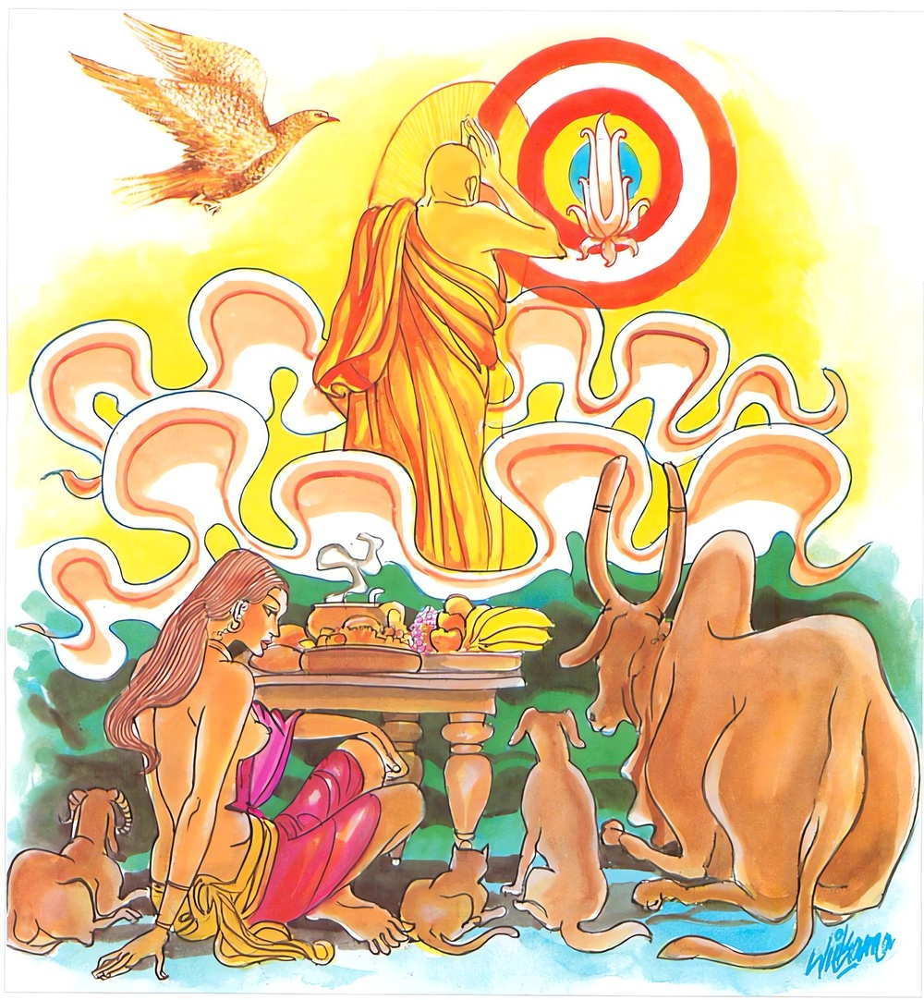

7-4 සතරවන අනුරුද්ධතෙරුන්ගේ වස්තුවයි.
මෙම කතාව සද්ධර්ම සාගරයෙන් ද කියවන්න.
යස්සාසවා පරික්ඛීණා ආහාරෙ ච අනිස්සිතො
සුඤ්ඤතො අනිමිත්තො ච විමොක්ඛො යස්ස ගොචරො
ආකාසෙ’ව සකුන්තානං පදං තස්ස දුරන්නයං.
යමක්හුගේ කාමාදි ආස්රවයෝ මුළුල්ල ක්ෂීණ වූවාහු ද, ආහාරයෙහිත් යමෙක් නො ඇලුනේ ද, (රාගාදියෙන් ශුන්ය හෙයිනුත් ඔවුන්හෙන් මිදුණු හෙයිනුත්) සුඤ්ඤත විමොක්ඛ නම්වූ ද, (රාගාදි නිමිති රහිත හෙයිනුත් ඔවුන්ගෙන් මිදුණු හෙයිනුත්) අනිමිත්තවිමෝක්ෂ නම් වූ ද නිවන යමකුහට අරමුණු වේ ද, ඒ රහත්හුගේ පිය සටහනක්, අහසැ පක්ෂීන්ගේ පිය සටහනක් මෙන්, නො දත හැක්කේ ය.

යස්සාසවා යන මේ ධර්මදේශනාව ශාස්තෘන්වහන්සේ වේළුවනාරාමයෙහි වාසය කරනකල්හි අනුරුද්ධතෙරණුවන් අරභයා දේශනාකළසේක.
එක් දිනක් තෙරණුවෝ දිරූ සිවුරු දරා කසළගොඩවල් ආදියෙහි සිවුරක් සොයති. මෙයින් තුන්වෙනි භවයෙහිදී උන්වහන්සේගේ පුරාණ භාර්ය්යාව තව්තිසා භවනයෙහි ඉපදී ජාලිනී දෙව්දුව නම් වූවාය. ඈ, තෙරුන් සිවුරු සොයන බව දැක දිගින් තෙළෙස්රියන්වූ පළලින් සතරරියන්වූ දිවසළු තුනක් රැගෙන ඉදින් මේ සළු මේ අයුරින්ම දුන්නොත් තෙරණුවෝ මේවා නොගනිත්යයි සිතා සිවුරු සොයන උන්වහන්සේගේ ඉදිරියෙන් එක් කසළගොඩක රෙදි කෙළවරවල් පමණක් පෙනෙන හැටියට දැමීය. තෙරණුවෝ ඒ මාර්ගයෙහි රෙදි සොයමින් යන අතර ඒ දාවලු දැක එය අල්වාගෙන අදිමින් යට කියනලද දිව්යසාටක දැක එය ඉවතලූ පාංශුකූල සංඥාවෙන් මෙය ගනිමියි රැගෙන වැඩියාහ.
උන්වහන්සේ සිවුරු කරන දිනයෙහි ශාස්තෘන්වහන්සේ පන්සීයක් භික්ෂූන් පිරිවරා විහාරයට වැඩමවා වැඩහුන්හ. අසූමහාශ්රාවක තෙරවරුද එහිම සිවුරු මැසීම සඳහා වැඩහුන්හ. මහකසුප්තෙරණුවෝ මුලින්ම වැඩසිටියහ. සැරියුත්හිමියෝ මැදය. ආනන්දහිමියෝ අගමය. භික්ෂූහු නූල් ඇඹරූහ. ශාස්තෘන්වහන්සේ ඉදිකටුවල නූල් අමුණා දුන්හ. මුගලන්තෙරණුවෝ ඒ ඒ තැනට අවශ්ය සේ සපයමින් ඇවිද්දාහ. දෙව්දුව ඇතුල් ගමට ගොස් ආර්ය අනුරුද්ධහිමියන්ට සිවුරුකරමින් ශාස්තෘන්වහන්සේ අසූමහා සව්වන් සහිත භික්ෂූන් පන්සීයනමක් සමග විහාරයෙහි සිටිති. කැඳබත් රැගෙන විහාරයට යව්යයි කියමින් භික්ෂා සඳහා සම්මාදන් කරවූවාය.
මහමුගලන්තෙරණුවෝ අතුරුපස වේලාවෙහි මහදඹයක් ගෙන ආහ. භික්ෂූන් පන්සීයට එය වළඳා අවසන් කළ නොහැකි විය. ශක්රයා සිවුරුකරන තැන බිම පිරිබඩ දුන්නේය. බිම ලා රස ගෑවාක් මෙන් රතුපාට විය. භික්ෂූන් වළඳා ඉතිරි කැඳ බත් ආදිය අතිවිශාල විය. භික්ෂූහු මෙතරම්වූ භික්ෂූන්ට මෙපමණ කැඳ ආදිය කුමක් සඳහා ගෙනාවේද, භික්ෂූන් මෙපමණයයි සලකාගෙන මෙපමණ ගෙනෙව්යයි නෑයන්ටත් දායකයන්ටත් කියා යවන්ට තිබුණා නොවේදැයි කියමින් දොස් කියන්ට වූහ.
ඉන්පසු බුදුරජාණන්වහන්සේ ඒ භික්ෂූන් අමතා, මහණෙනි, කුමක් කියව්දැයි අසා ස්වාමීනි මෙබඳු කථාවක් යයි දැන්වූ පසු, මහණෙනි මේ දානසම්භාරය අනුරුද්ධතෙරුන් විසින් ගෙන්වනලදැයි සිතන්නහුද? ස්වාමීනි, එසේය. මහණෙනි, මාගේ පුත්ර අනුරුද්ධ මෙබන්දක් කියන්නේ නැත. රහත්හු ප්රත්යය ප්රතිසංයුක්ත කථා නොකෙරෙත්. මේ පිණ්ඩපාතය දේවානුභාවයෙන් උපන්නේයයි අනුසන්ධි ගළපා ධර්මදේශනා කරමින් මේ ගාථාව වදාළහ:
රැස් කෙරුම් ඉවත හළ
අහරෙහි නොඇළුණා වූ
අනිමිති පැතුම් ඇති
නිවන් අරමුණු ඇති කළ
රහතන් ගිය ගමන්මග
අහස විහඟුන් ගිය සේ
පියසටහන් නොදත හැක.
එහි යස්සාසවා යනු යමකුගේ සිව්වැදෑරුම් ආශ්රව ක්ෂයවී ගියේද, ආහාරෙ ච අනිස්සිතො ආහාරයෙහි තෘෂ්ණා දෘෂ්ටි වශයෙන් ආශ්රයක් නැද්ද, පදන්තස්ස දුරන්නයං යම්සේ අහසේ පියාඹා යන පක්ෂීන්ගේ මෙතැන හිස ගසමින් ගියහ, මෙතැන පියාපත් වැදුණේයයි කියනොහැකිද? එපරිද්දෙන් මෙබඳු භික්ෂූන්ගේ නිරයට යෑමක් ගැන හෝ තිරිසන් භවයට ගියහයි හෝ ආදි වශයෙන් පාසටහන් නියම කිරීම නොකළහැකිය. දේශනාවසානයෙහි බොහෝදෙනා සෝවාන්ඵලාදියට පැමිණියාහුය.